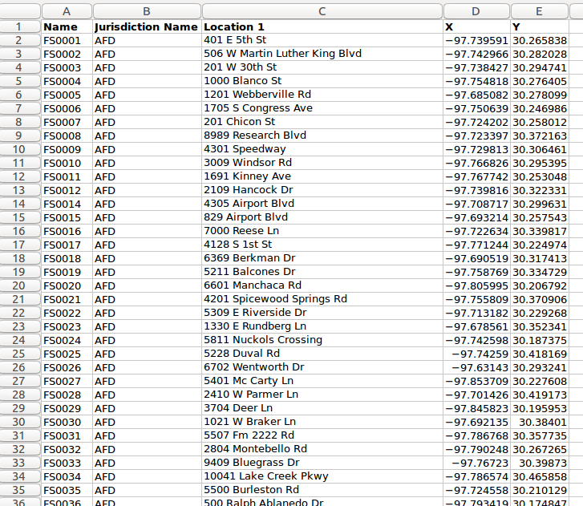
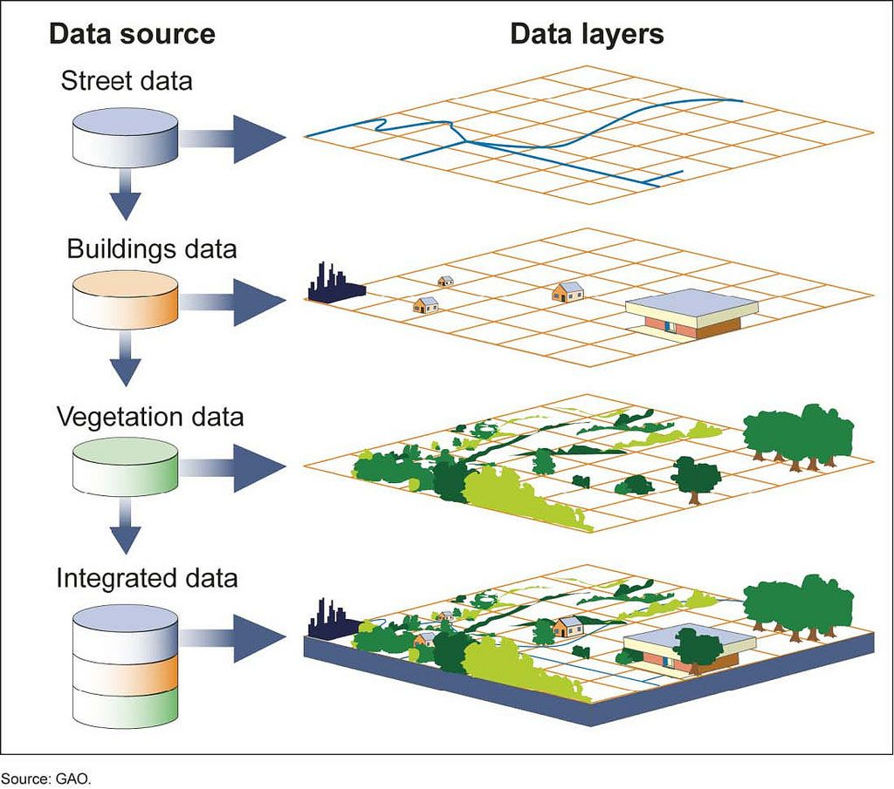

Week 1: Hello, World
GIS & Geospatial Data
You might have heard of the acronym GIS: GIS stands for Geographic Information Systems, and can refer to computer systems, infrastructure, software, data, or any mix of these things together. A GIS user uses GIS tools created by a GIS developer to interact with GIS data. Over time, as the importance of location information has increased in areas outside the traditional GIS industry, the term "GIS" has evolved to refer to anything related to geospatial data.
As for that: Geospatial, or just Spatial, data is simply data with location information included.
But what does that mean, exactly?
Spatial isn't so special
Let's take a look at "regular" data, versus "spatial" data, using a public dataset from data.austintexas.gov.
Below is a table of data. Each row represents a single record, and each column has a name describing its content. If you've ever edited data in a spreadsheet, this probably seems familiar. Here, we have a table of firestations in Austin, TX:
To turn that table of data into geospatial data, all we need to do is add
location information to each record. Here, we've added longitude and
latitude (or lon/lat) coordinates to that same table of firestations. Pairs
of lon/lat values are used to represent a point on the Earth's surface:

Using that location information, we can then create a map of our original data. Each point on this map represents one firestation from the table mapped in the city of Austin, TX:
Putting it all together
Geospatial data doesn't actually become "a map" until it's combined with other data in layers. In the map above, there are actually many layers of data, including:
- Water boundaries showing lakes, rivers, and ponds
- Road data showing the streets & highways
- Topographic data used to show the terrain (hills and valleys)
- ...and of course, the firestation location data!
Being able to combine multiple sources of data into an integrated whole allows us to start asking questions and using our data to solve problems.

Spatial Problem Solving
GIS, geospatial data, and maps help us humans connect a what to a where. When we're able to connect what we know with where we are then we can use those connections to solve problems and make decisions.
One good approach to asking questions with data is the following five-step Spatial Problem Solving process:
- Ask & explore: "Does our city have sufficient firestations to respond to emergencies across the city in a timely manner?"
- Model & compute: Get a list of existing firestations in the city and compute their coordinate locations
- Examine & interpret: Combine data layers to show firestations on a map of the city. Include other GIS data sets that can help you make decisions, like roads, building locations, traffic density and more.
- Make decisions: "It looks like this new neighborhood is five miles from the nearest firestation, and the road sees a lot of traffic which can slow response time even more. The answer to my question is 'no': we don't have enough firestations to keep our city safe."
- Share results: Take your findings to city planning: the city needs to build a new firestation!
Next week, we'll learn about a specialized kind of spatial problem solving that uses GIS called Remote Sensing, and how we can use satellites in orbit to study the earth up close.
Activity
This week we're going to use an interactive GIS web app, Urban Observatory, to explore geospatial data for cities around the world.
Thinking Critically with GIS
Working at your own pace, learn the basics of Urban Observatory using the guide at https://learn.arcgis.com/en/projects/from-london-to-tokyo/.
When you reach the end of Step 15, come back to the group.
In your groups, take some time to come up with a few questions that you think you might be able to answer using the Urban Observatory's data. Then as a group discuss the spatial questions you came up with: what kind of data would you need to explore in order to answer these questions? What data would you look for to help make a decision and answer your questions?
Send your questions and any discussion notes to summercamp@planet.com if you'd like to share your work with us.
Further Inspiration
Feel free to explore these on your own this week.
Reading: How to Lie with Maps by Mark Monmonier
Watching: How the States Got Their Shapes: How Water Shapped the US Map
Q&A With Planeteers
This week, meet Kelsey Doerksen, Natasha Nogueira and Sarah Preston: Kelsey, Natasha and Sarah will host a Q&A discussion on Thursday at 10:30am Pacific Time.
| Kelsey is a Space Systems Engineer in Satellite Operations at Planet, operating the Dove and SuperDove satellite constellation. She is passionate about using space technology to help life on Earth and is pursuing her PhD at Oxford University to research how to use Earth Observation datasets to tackle climate change. She spends her weekends running, boogie boarding, and hiking. | |
| Natasha is a Space Systems Engineer for the SkySat Mission Operations team at Planet, operating and maintaining the SkySat fleet of high resolution satellites and working on automation of satellite operations. She spends her time outside of work training for a triathlon, painting landscapes in acrylics, and volunteering at the Monterey Bay Aquarium to teach and inspire ocean conservation. | |
| Sarah is a Product Marketing Manager at Planet, working across the sales and product teams to bring tangible remote sensing solutions to data-hungry markets. In addition to storytelling, she is an avid reader and puzzler, drinking way too much tea and wrangling her labradoodle puppy. |